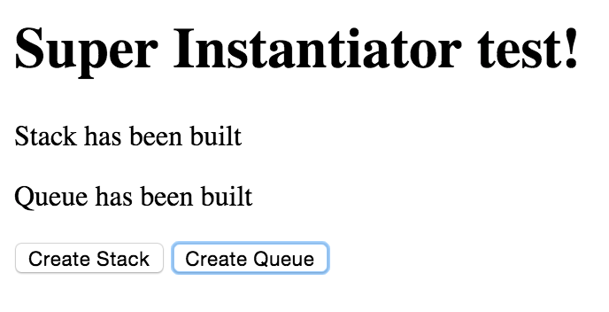
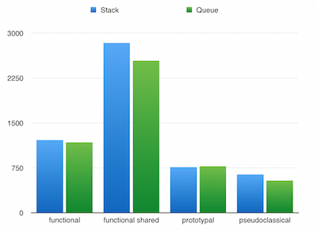
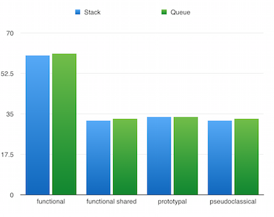

Evaluating Performance of Instantiation Patterns
What does instantiation mean?
In object orientated programming when you create an object from a constructor function that passes along shared properties and methods it is called instantiation. The object that is created is referred to as an instance of its constructor. Other programming languages refer to the constructor function as a class.
Javascript doesn't force the programming into a set process to create a class and instead supports four different instantiation patterns to achieve this result.
The four patterns to instantiate an object
- functional
- functional with shared methods
- prototypal
- pseudoclassical
What are we checking when we evaluate each pattern?
There are two aspects to evaluate a program (and in this case the act of instantiation). I used Chrome devtools to collect a CPU profile which records the time in miliseconds that a specific function takes. A heap snapsot looks at the memory allocation of each object created on the page measured in megabytes. For more information about performance testing using Chrome, check out Speed Up JavaScript Execution.
Performance of an application is measured in both time or space and often you have to choose which to optimize for. Learning how the devtools profiler records performance was valuable to understanding how design choices affects the runtime.
The testing environment
Let me present the wonderful interface that I built to test an implementation of stack and queue constructors.

Great, I know. The JavaScript that was running to create the tests does all of the work behind the scenes.
var queues = [];
var stacks = [];
$(".createStack").click(function() {
stacks = [];
while(stacks.length < 100000){
stacks.push(Stack());
stacks[stacks.length - 1].push(Math.random());
}
});
$(".createQueue").click(function() {
queues = [];
while(queues.length < 100000){
queues.push(Queue());
queues[queues.length - 1].enqueue(Math.random());
}
});
It made an array of objects that were instantiated by the pattern being tested. It then called a push method to add to each stack and an enqueue method to add to each queue a random generated number.
Adding an operation on top of instantiation would not affect the result, because adding values to it is a constant time and space operation in this implementation. The additional jQuery operations were all identical for each test so they can be considered a constant as well.
The Results
CPU time

Ok, first thing you'll notice is functional shared is off the charts. I determined that based on the cpu profiles that each test had generated the problem was due to the extend function that I used for this pattern. There was some flaw in how the _.extend from the underscore library was reporting in the CPU profiles I collected.
Of the tests that were ran, pseudoclassical instantiation had a faster run time than the others. Note that the test script tested it based on 100,000 instances of stack and queue and the execution times were under 1200 ms for all patterns of instantiation.
Memory usage

I noticed that due to the similar data storage type used to implement both stack and queue that there was no noticeable difference in the actual memory usage. This was expected since they are similar data structures, just with different rules and methods governing access.
The reason functional instantiation was close to double the memory usage is because all methods on the constructor have to be declared in every instance it generates. This is unlike prototypal and pseudoclassical which use prototype inheritance to pass along the methods, or functional shared which references a shared object of methods.
Results (take 2!)
Not satisfied with flawed data I found out about alternative testing tools to simplify the performance tests. Not that I didn't enjoy the process of generating my own HTML tester and profile scripts, but it isn't efficient. Efficiency is the whole idea for this post!
I tried out the site jsperf.com and found that testing was easy to setup, and the interface was simple. Here is my test setup and the results were in line with my own testing. I fixed the extend for functional shared and it now performs in line with expectations.

My takeaway from running this second test was the act of testing itself. I learned valuable lessons about the concept of using various tools to get a good snapshot of how your implementation performs.
Functional instantiation performed poorly here and I thought this was an outlier similar to the error with functional shared in my initial testing. I checked with other sources that did similar testing and found it to be close to what they surmised. Source
In summary
Depending on the scale of the application, and the complexity of the constructor, instantiation patterns will not make a noticeable difference in its performance. Despite the difference of 40-50%, the slowest pattern instantiates at hundreds of thousands of objects a second in my tests. If optimizing for time, pseudoclassical has an edge and if optimizing for space, I would avoid functional instantiation.
It has an impact on your program, but it will most likely not affect the user's experience. This makes it far more a personal choice. On a personal note, I like the pseudoclassical pattern better, and I am even working on remembering to use the keyword new in my code!
Thanks to Bjarke Staun-Olsen for his help on the implementation and testing as well as to the good people at Hack Reactor for providing the learning environment.